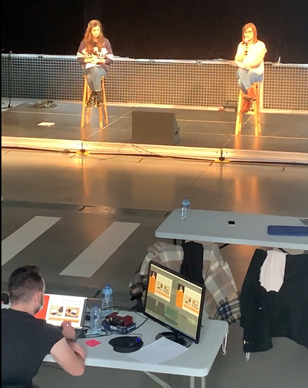

PhD Student

Predictive coding | Sensory prediction | Repetition suppression | Premature neonates | Neurodevelopmental disorders | Tactile
Social medias
Contact me
Email : anne-lise.marais [at] unicaen [dot] fr
Science popularization
2021 October
Fête des sciences
2021 March
Têtes chercheuses
I competed in "Têtes Chercheuses" with Dr. Nadège Roche-Labarbe, Dr. Victoria Dumont and Marie Anquetil. This contest allows research teams from different laboratory in Normandy to create educational tools highlighted and distributed in science popularization event during three years. Our project is PRESTON (PREdiction Sensorielle du TOucher chez le Nouveau-né, Tactile sensory prediction in newborns).
2021 February
L'atelier des chercheurs

I participated in "L'atelier des chercheurs" organized by Le dôme in Caen, France. L'atelier des chercheurs is a meet-up program between PhD students and high schoolers. During a day, we can meet students in their school and talk about research, what it's like to be a PhD student, what we do in our laboratory and what we work on. During that day I prepared a presentation on generalities about the brain, how it works, how it grows and I introduced my PhD topic. On this picture, I was introducing the concept of electrical variations in the brain by showing a real EEG plot during a sensory prediction task.
Chercheurs Chercheuses
I participated in Chercheurs Chercheuses organized by Le dôme in Caen, France. Chercheurs chercheuses is an open event during a day where PhD students do conferences or workshops about their research interests. Because of the Covid-19, the event was fully dematerialized so I recorded a webconference with Marie Anquetil availabe on Youtube (Click the link).